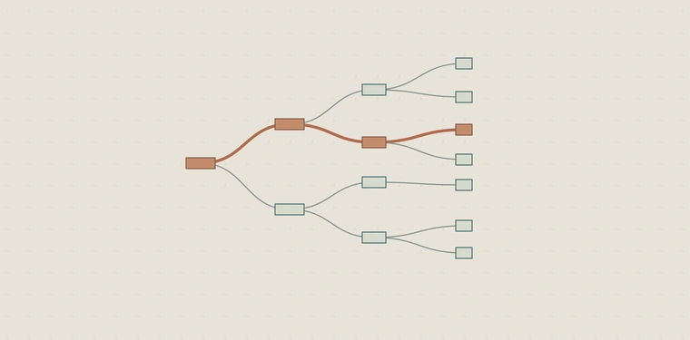

先把续写想成一次抽取
GPT.py 加载分词器和因果语言模型，将一段中文开头编码后送入 generate。每一步都基于已有 token 预测下一个位置，再把选出的 token 接在末尾。do_sample=True 且 num_return_sequences=3 表示采样三条序列；若概率集中，几条结果仍可能相同。
温度控制候选分数之间的差距。设只有两个候选，原始 logits 为 2 和 1。温度为 1 时，前者的概率约为 0.731；温度为 0.5 时约为 0.881。降低温度会让较高分的候选更占优势。这个算例可以单独验证，无需加载模型。
每个开关限制哪一步
仓库设置 top_k=30 和 top_p=0.9。前者按名次限制候选数，后者依据累积概率保留优先候选。从一批已经归一化的概率 0.60、0.25、0.10、0.05 出发，只用 top_p=0.9 就至少需要前三项，因为前两项之和只有 0.85。
脚本还会惩罚重复 token 并禁止生成已经出现过的二元 token 组合。讨论重复时应在分词器的粒度上比较；同一个汉字短语经过编码后可能跨多个 token。单独切换一个参数，固定提示与随机种子，保留 token 序列，更容易辨认变化来自哪条约束。
把开头和新内容切干净
这里给输入设置最多 50 个 token，又给生成设置 max_length=150。对于这类仅解码模型，后者限制提示加输出的总长度。若实际提示占 20 个 token，生成最多再占 130 个，也可能提前遇到结束标记。
源码在解码整条序列后按原始提示的字符数截取续写。分词器解码可能插入空格或正规化字符，因此这一刀未必落在提示结尾。更稳定的检查是记录输入 token 数，在输出编号上跳过这段前缀，再解码剩余部分。用包含空格或标点的提示比较两种截取方式，就能观察到边界是否一致。